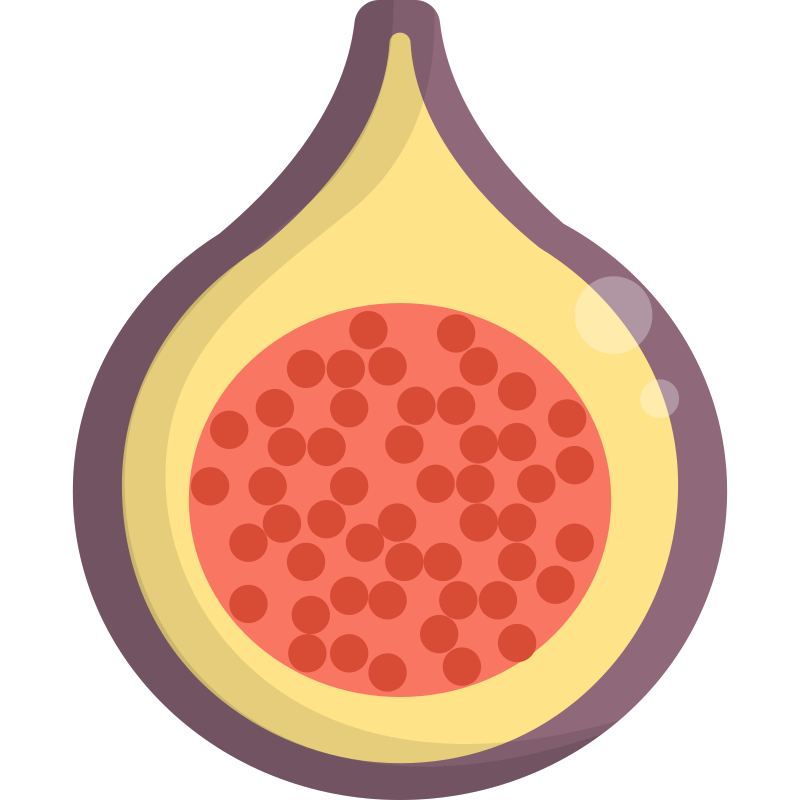
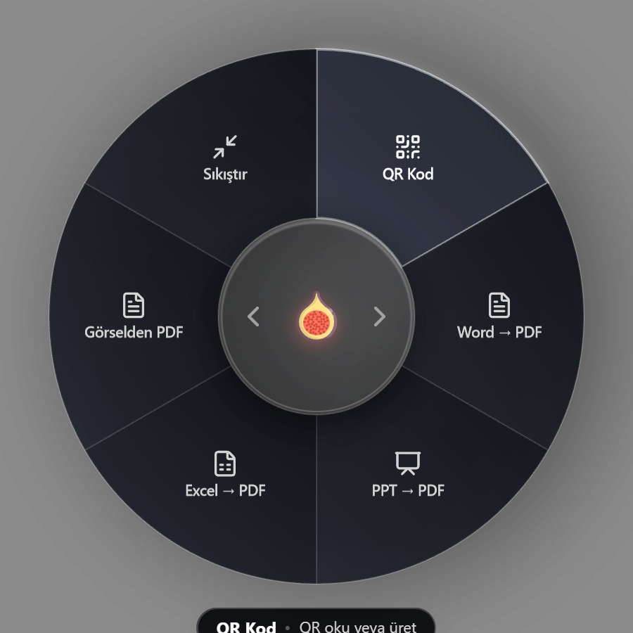
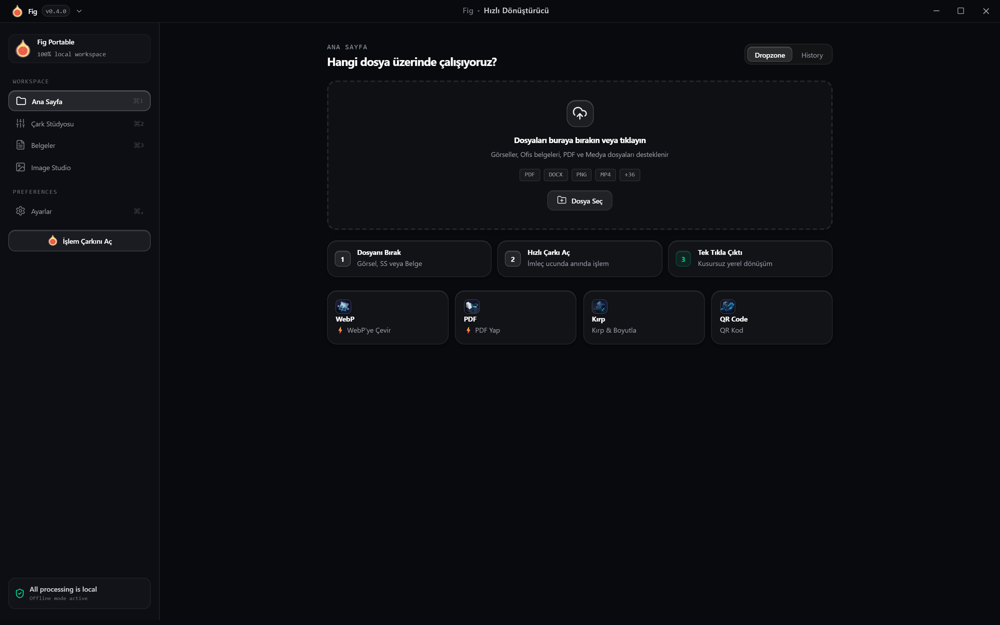
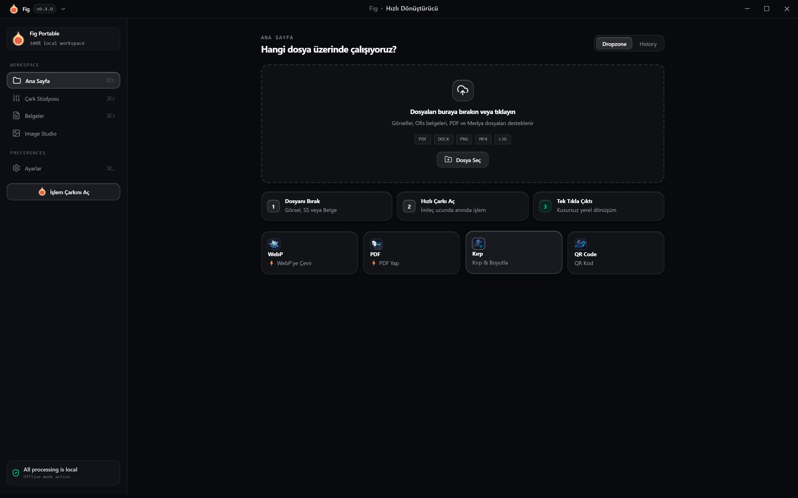

Windows 11 / 10 Native

TIRED OF SLOW
FILE CONVERTERS?
Meet Fig. Your files, simply effortless.
Instant Cursor Action
ONE SHORTCUT.
ANYWHERE.

Trigger with
Ctrl
+
Space
fig.png
Crop • WebP • Censor
fig.pdf
To Word • Excel • Extract
fig.mp4
Extract Audio • High-Q GIF
fig.docx
1-Click PDF Conversion
fig.webp
Ultra-Fast Optimization
PNG
Images
WebP, Crop, Censor
PDF
Documents
Word, Excel, Extract
MP4
Media
Audio, GIF export
DOC
Office
1-Click to PDF
EVERY FORMAT. ONE INSTANT TOUCH.
Convert, crop, extract, and censor in seconds.
Architecture
BUILT FOR WINDOWS


Open Source & Free
MIT Licensed. Community driven, zero paywalls.
Portable Executable
Single standalone binary. Zero installation needed.
100% Offline & Private
Local engine. No cloud uploads, zero telemetry.
YOUR FILES,
SIMPLY EFFORTLESS.
Windows 11 / 10 • Portable & Free
Get it on GitHub
github.com/yunusemre-celik/fig
Download
@hirtzirt
in/yunusemrecelik00
@yunusemrecelik.dev
yunusemrecelik.dev